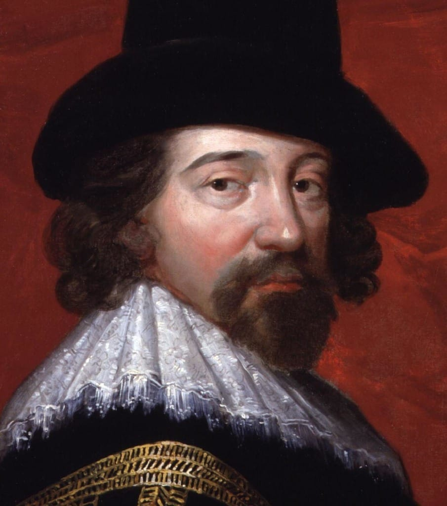
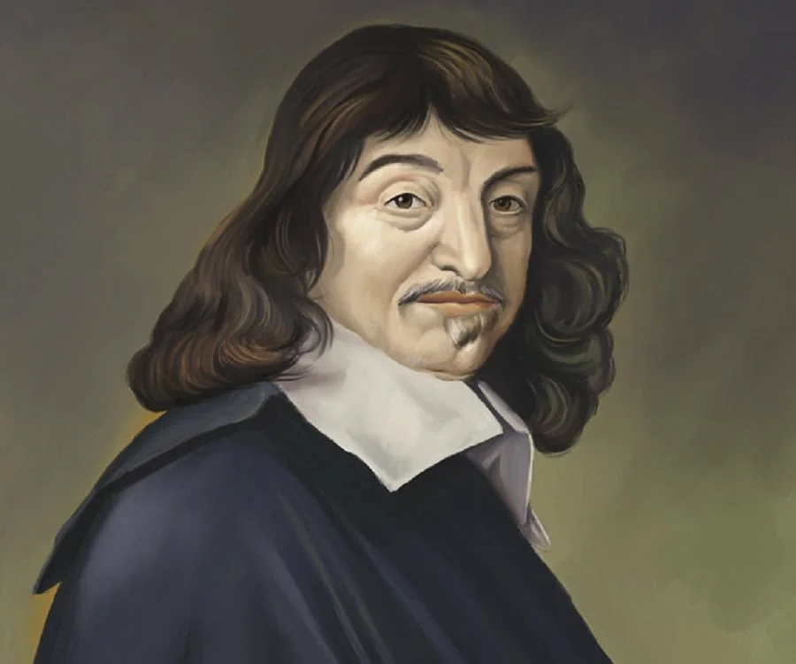
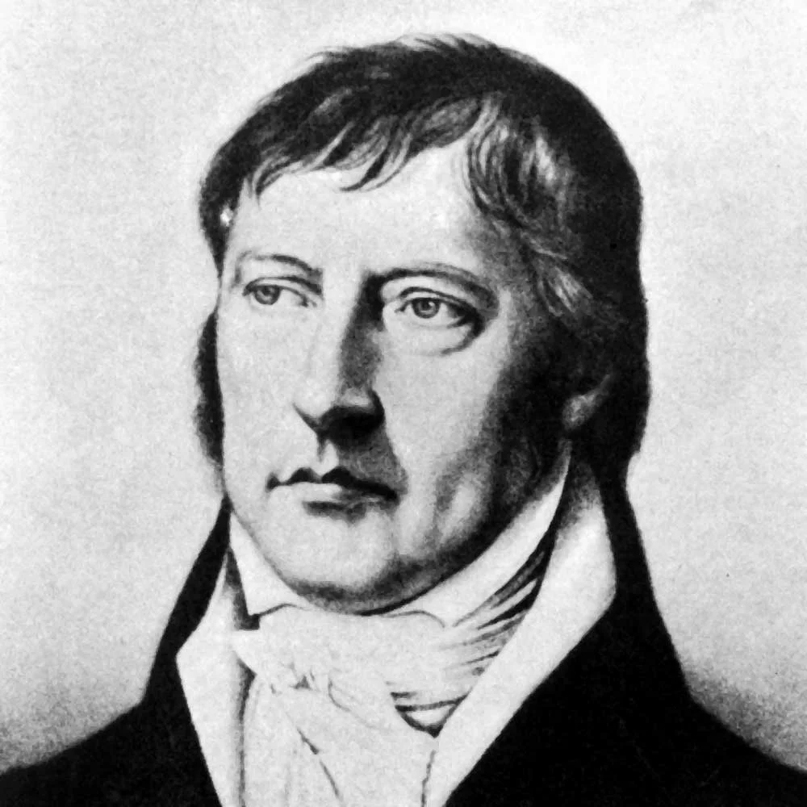
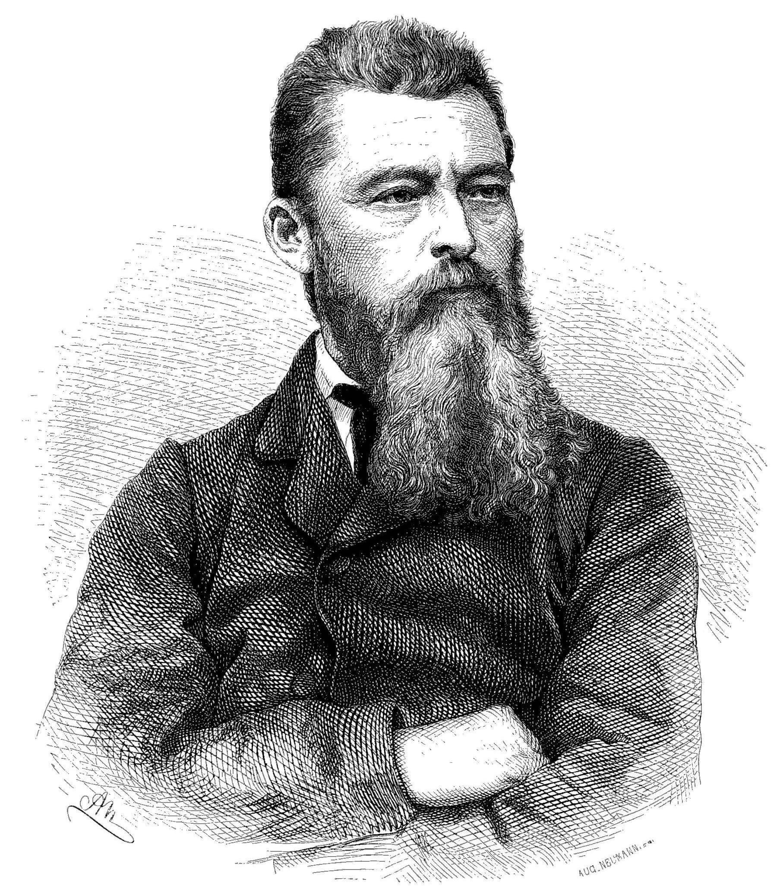
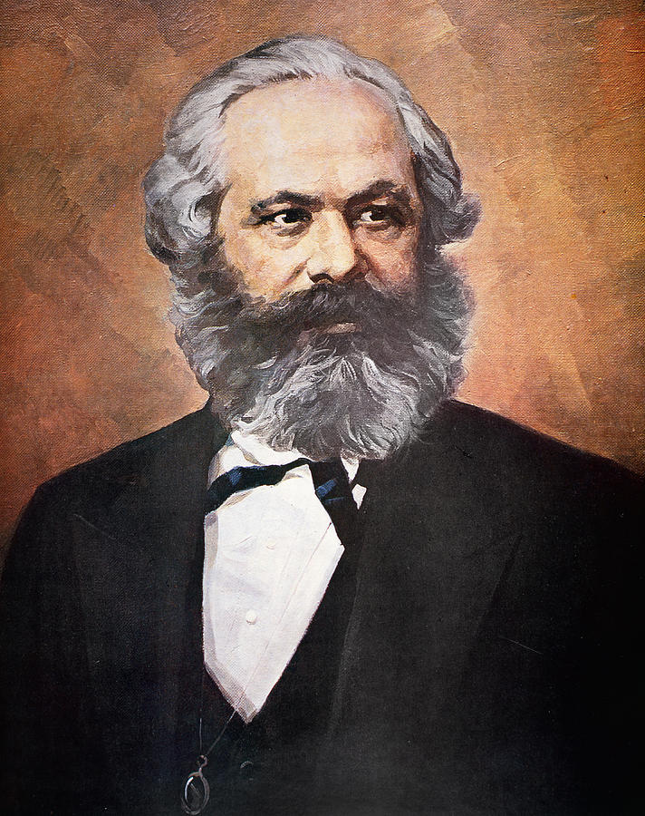

Философия Нового времени
Условные временные границы философии Нового времени – XVII – вторая половина XIX в.
Среди философов Нового времени можно выделить имена Фрэнсиса Бэкона, Джона Локка, Рене Декарта, Бенедикта Спинозаы, Иммануила Канта, Георга Гегеля, Карла Маркса, Фридриха Энгельса. Нам предстоит ознакомиться в самых общих чертах с развитием философской мысли эпохи, произведшей за триста лет революционные изменения во всех сферах человеческой жизни, прибегнув к сжатой характеристике философских концепций лишь немногих из большого числа великих европейских философов.
Новое время обозначает радикальные преобразования в социально- экономической жизни общества: упрочение капитализма, промышленную индустриальную революцию и урбанизацию; происходят буржуазно- демократические революции, сокрушаются монархии; особый социальный статус обретает наука, и прежде всего математическое и экспериментальное естествознание. Сдвиги в духовном мироощущении, системе идеалов и ценностей, стиле и образе жизни – все это отразилось в новых философских школах и направлениях, в новой проблематике и стилистике философии.
Это эпоха переориентации интересов человека с внутреннего мира на окружающий его внешний мир: все силы человека теперь направлены во вне, на освоение и завоевание природы. Идеалом Нового времени становится человек как хозяин, властелин природы, на мир он смотрит как на бездонную кладовую. Вся история Нового времени начинается с объявления человека субъектом и представляет собой проявление человека во всех возможных способах и формах активности, т.е. реализацию «субъективности». Человек как субъект – это существо, которое полагает себя основой всего и само предопределяет для себя все остальное.
Новизна и оригинальность философии Нового времени состоит еще и в том, что, «проникнув» в глубины бытия человека, она четко обособила и разделила два мира: один вбирает конкретно-исторического, повседневного человека, реальность его актуального действия и познания; другой есть то, что соответствует человеческой глубинной сущности, внутреннему порядку и структуре деятельности и познания. Первый мир формирует неистинное знание, ведет к заблуждениям, обусловленным ограниченностью конкретного индивида, несовершенством его рассудка, ослепляющими и обманчивыми страстями и эмоциями. Подлинная же сущность, универсальная «природа» человека есть чистое воплощение совершенства разума и его неограниченных возможностей. Это различение пронизывает всю нововременную философию, даже во многом определяя тенденции развития философской мысли последующего времени, но этот разрыв стимулирует поиск направлений, путей и методов, следование которым приблизит конкретного эмпирического человека к своей собственной абстрактно-идеальной сущности.
Согласно своему призванию, философия должна была заняться критической рефлексией масштаба и смысла происходящих перемен, откликаясь на происходящее, помочь современникам войти в мир Нового времени, новое культурное пространство с новым местоположением человека в его отношении к самому себе, к природе, обществу и Богу. Идея божественного творения мира и человека и место самого Бога в мироздании переосмысливаются. Этот новый мир строился и обустраивался людьми с трудом, в личных драмах, в социальных столкновениях и конфликтах. Для выхода из-под власти прежних традиций требовалось значительное время, мужество, усилия, поскольку прошлое не отпускало в этом новом мире и первопроходцев.
Научная революция XVII века стала огромным событием, определившим содержание и характер философской мысли этого периода. Ее начало было положено открытиями и трудами Н. Коперника, И. Кеплеpa, Т. Браге, Г. Галилея, Р. Декарта, Х. Гюйгенса, Ф. Виета, а завершение выпало И. Ньютону («Математические начала натуральной философии», 1687 г.). Потребности нового социально-экономического уклада в развитии мануфактурного производства, ирригационных и шахтных работ, кораблевождения и военного дела во много определили бурное развитие астрономии, математики, механики, дав миру блестящую плеяду ученых. Для исследования природы была необходима выработка новых методологических основ, требовалось теоретическое осмысление становления экспериментальных наук, на повестке дня стояла потребность в очищении от наивного эмпиризма и религиозно–схоластических догм.
Итак, философия становится все более рационалистической и прагматичной. Рационализм всей нововременной философии (в широком смысле слова) состоял в безусловном признании всеми мыслителями, независимо от их гносеологической и методологической позиции, решающей роли разума в мироустроении. Главной целью эпохи является рациональное мироустройство, а необходимым условием его осуществления – создание универсальной научной методологии познания. Основное внимание философии Нового времени, поэтому, сосредоточено на анализе Знания во всем многообразии его родов, видов, сфер и форм, а также на процессе его получения и представления. Знания, во-первых, лежат в основе изобретения и применения все более совершенных технических приспособлений; во–вторых, само знание природы, ее структуры и закономерностей означает власть человека над ней. Г. Гегель пишет: «Не будь соней, постоянно бодрствуй. Если ты соня, то ты слеп и нем; бодрствуя же, ты видишь все и говоришь всему, что оно такое. А это и есть разум и власть над миром». В этом афоризме утверждается, что для достижения власти над природой, которой человек себя противопоставил, требуется активное, деятельное и автономное отношение к окружающему миру. Мышление и деятельность позволяют, казалось бы, слабому, смертному человеку познавать и, тем самым, покорять природу. Все философы этой эпохи сходятся во мнении, что открываемая разумом истина носит абсолютный, необходимый и всеобщий характер, что соответствует свойствам осваиваемой и целенаправленно преобразуемой природы.
В рассматриваемый период основными проблемами философии становятся гносеологические и, соответственно, методологические. Гносеология Нового времени задается вопросом об источниках истинного знания, методологический вопрос формулируется следующим образом: каким способом познавать мир? В зависимости от решения этих вопросов в философии возникают два направления: рационализм (от лат. ratio – разум) и эмпиризм (от греч. empeiria – опыт). Рационализм представлен именами таких мыслителей, как Р. Декарт, Г. Лейбниц, Б. Спиноза, а эмпиризм – Ф. Бэкон, Дж. Локк, Т. Гоббс.
Эмпиризм как философско-методологическое учение ориентировался на экспериментальное естествознание. Эмпирики утверждали, что новое истинное знание человек получает только в опыте. Дж. Локк представлял процесс познания так: человек рождается с душой, подобной чистой доске (tabula rasa, лат.), и лишь опыты жизни наносят на нее слова и образы. В сенсуализме (от лат. sensus – чувство), гносеологическом направлении, близком эмпиризму, утверждается, что подлинным источником истинных знаний являются чувства, чувственный опыт: «в разуме нет ничего, чего прежде не было бы в чувствах». Таким образом, роль разума не отвергается, но его место в познавательном процессе вторично, зависимо от полученных чувств, обработкой которых он и призван заниматься.
 Родоначальником сенсуализма, эмпиризма и материалистической философии был английский мыслитель Фрэнсис Бэкон (1561 – 1626). Теоретическое наследие Бэкона проникнуто идеей единства созданной Творцом природы, человечества и человеческого знания (прежде всего науки). Основой индивидуального и общественного богатства являются экспериментальное естествознание и технические изобретения: по Бэкону, «знание – сила», «всяческое могущество человека – в практике», «светоносные опыты» (теоретизирование) содействуют «опытам плодоносным» (практическое воплощение идей). Главный, самый сложный опыт человечества – великое восстановление наук. Оно требует основывать любое исследование на чувственном опыте, тщательно очищать познающий разум от заблуждений и иллюзий («предрассудков»), разработать и повсеместно применять правильный метод познания, создать и преумножать единую систему наук. Итак, познание идет от опыта к рациональным обобщениям, обработке фактов, полученных при помощи индуктивного метода. Индуктивное рассуждение – это движение мысли от частного к общему, от простого к сложному, от факта к закону.
Эмпиризм и индуктивизм Бэкона был вдохновлен идеями социальной пользы, гносеологической установкой о «данности мира в ощущениях», а также задачами борьбы со схоластикой и некритическим обыденным мышлением.
Большое значение в преодолении наследства средневековой схоластики имеет учение Бэкона о «идолах» (или «призраках», предрассудках человеческого сознания), мешающих достижению истины, сдерживающих прогресс наук. Это
- идолы рода;
- идолы пещеры;
- идолы площади (рынка);
- идолы театра.
Если два первых идола обусловлены «естественными свойствами человеческого ума», отражающего окружающий мир не совсем точно и адекватно вследствие общечеловеческих (родовых) и личностно-индивидуальных особенностей познания (пещерных); то два следующих идола приобретаются людьми благодаря общению и специфике языка (идолы площади, рынка) и в результате некритичного следования авторитетам, ложным теориям и философским учениям (идолы театра). Избавиться от идолов сознания невозможно, но необходимо знать об их существовании и стремиться к осознанному противостоянию предрассудкам разного рода. Подлинная научная философия должна отбросить всевозможные предрассудки и ложные идеи на основе индуктивной методологии.
Рационалисты, в отличие от эмпириков, утверждали, что достоверное знание, имеющее всеобщий, абсолютный и необходимый характер, может быть получено при помощи разума из самого разума. Они не отвергали опытное познание, но ограничивали чувственный опыт отражением единичного, поверхностного и случайного. Идеалом подлинного научного знания, согласно взглядам рационалистов, является математика, и философское знание должно уподобиться математическому. Такое намерение реализует в своей «Этике» Б. Спиноза, доказывая философские аксиомы и леммы «геометрическим способом» и демонстрируя, тем самым, что строгие логические выводы и однозначные правила могут действовать и в философии.
 Выдающимся выразителем рационализма в гносеологии и методологии был французский философ Рене Декарт (1596 – 1650), чье имя связано серьезными исследованиями в области математики и наук XVII века. В своем главном философском произведении «Рассуждение о методе» Декарт занят поисками и обоснованием единственно правильного и достоверного пути познания истины. Им утверждается, что основным методом отыскания истины и выявления исходного принципа познания является дедукция. Идеи, находящиеся в сфере сознания человека, бывают а) приобретенными (полученными в процессе воспитания и обучения), б) сотворенными (выведенными человеком из приобретенных знаний благодаря собственной воле и способностям), в) «врожденными» (изначально свойственными всем людям в силу своей очевидности, ясности и отчетливости). Именно они составляют универсальный критерий истинности или ложности идей. Чтобы достичь знания отчетливого и ясного, необходимо усомниться во всех имеющихся знаниях. Принцип сомнения, по Декарту, абсолютен: это сомнение не в прошлых научных и философских системах, но и в самом характере познавательного процесса, часто опирающегося на сиюминутный опыт и обманчивые чувства (к примеру, именно они побуждают человека считать, что Солнце движется вокруг Земли). Цель универсального сомнения состоит не в разрушении познания и связанных с ним надежд, а, наоборот, в укреплении уверенности в возможности рационального познания. «Все подвергай сомнению» – вот методологический принцип Декарта; но тогда на что опираться человеку, брошенному философом в пучину скептицизма? Единственно несомненным остается только само сомнение, а оно, в свою очередь, есть процесс мышления человека. Несомненна реальность самого сомневающегося: «если я мыслю, то, значит, я существую» (лат. – «cogito ergo sum») – это, по мнению Декарта, и есть изначальная ясная и отчетливая истина, исходный пункт для всего последующего философствования. Человек у Декарта – это «мыслящая реальность».
Учение Декарта носило прогрессивный характер, оно утверждало лишь то, что подтверждалось теоретической наукой, отвергало все необоснованные знания и ориентировало на самопознание, уповало на интеллектуальную интуицию.
Особое место в философии Нового времени занимает эпоха Просвещения, которое достигло расцвета во второй половине XVIII в. в творчестве Ж.-Ж. Руссо, Вольтера, Ж.О. Ламетри, К.А. Гельвеция, Д. Дидро, П.А. Гольбаха, И. Гете, Г. Лессинга, И. Гердера.
И. Кант, считавший своей «родиной» эту эпоху, выразил ее лозунг так: «Решись быть мудрым» . Быть просвещенным, мудрым – значит задействовать все способности разума для достижения общественного прогресса, использовать свой разум самостоятельно и свободно. Деятели эпохи Просвещения подчеркивали, что рост и распространение знаний обеспечивают прогресс во всех сферах жизни. Во всей Европе создавались университеты, школы, музеи, библиотеки, ботанические сады, театры, призванные нести свет знаний, развивать умы граждан. Своеобразным итогом просветительской работы интеллектуалов XVIII в. стала французская «Энциклопедия, или Толковый словарь наук, искусств и ремесел», которая насчитывала 150 авторов и 35 томов, бессменным редактором которых в течение 25 лет был Дени Дидро. Создатели Энциклопедии рассматривали ее как квинтэссенцию идей Просвещения, как инструмент, при помощи которого будут уничтожены суеверия и предоставлен каждому доступ к знаниям, накопленным человечеством.
Идеологи этой эпохи считали, что общественный прогресс нуждается в просвещенных гражданах, достаточно обратить разум людей к знаниям – и наступит царство справедливости и свободы; идея «просвещенного монарха» будоражит умы не только философов, но и самих правителей. Позже пришло осознание недостаточности одних лишь просветительских усилий. Последние с необходимостью должны сопровождаться изменением и совершенствованием политических и правовых отношений. Это для того времени означало ограничение абсолютизма (вплоть до низложения монархий), введение конституции, которая должна была обеспечить права всех граждан на жизнь, здоровье, самореализацию, свободу вероисповедания, частную собственность и т. д. Право, таким образом, составляет обязательный критерий социального прогресса.
Представления о том, что знания и право являются главными критериями общественного прогресса, достаточно популярны до сих пор. Тем не менее, уже в философии Нового времени они подвергались критике. В эпоху Просвещения скептический взгляд на эту идею высказал Ж.-Ж. Руссо, поставив следующий вопрос: «способствовало ли улучшению нравов развитие наук, искусств и ремесел?» и ответив на него отрицательно. Современные исследователи проекта Просвещения более категоричны в своих оценках и приходят к такому выводу: лозунги Просвещения во имя освобождения человека обернулись его универсальным угнетением; социальный процесс совершенно поработил разум, единственным критерием которого стала инструментальная ценность, главная цель которой – обеспечение господства над людьми и природой.
Отметим, что эпоха Просвещения вошла в историю европейской культуры открытым и острым противостоянием религии и церкви. «Раздавим гадину!» – призывал Вольтер, подразумевая католическую церковь; мировые религии, насмешничал он, возникли в результате встречи трех великих мошенников с глупцами. Последовательно атеистические воззрения высказывали Ж. Мелье, П. Гольбах, однако для большинства философов стремление противостоять церковной схоластической догматике не перерастало в отрицание веры и религии.
XVIII век в европейской философии ознаменован разработкой интересных материалистических и идеалистических систем. Британские философы Джордж Беркли и Давид Юм, различаясь в решении некоторых вопросов, тем не менее, сходились в признании субъективно- идеалистической истины: реальность предметов определяется комплексом ощущений индивида, «существовать – значит быть в воспринимаемым». Человек – активный познающий субъект, центральное звено мироздания, он создает устойчивые представления, упорядочивая природу, усматривая / устанавливая ее законы.
Противоположные взгляды на мир и место человека в нем высказывают французские материалисты (Ж. Ламетри, Д. Дидро, П. Гольбах). Материя, природа – это начало и основа всего сущего, она активна, подвижна, необходимо самодетерминирована, а потому может быть описана механистически. Человек – разумная часть природы, он продукт окружающей его среды. Сознание человека призвано выразить в чувствах и абстракциях воздействующий на него материальный мир. Истинное знание соответствует самим вещам, что устанавливается в целесообразно поставленных опытах (экспериментах).
 К философии Нового времени также относится немецкая классическая философия (конец XVIII – первая половина XIX в),
особый, сложный и противоречивый феномен европейской духовной жизни. В течение всего лишь полувека
разворачивается деятельность величайших гениев философской мысли, создавших классический образец строгой
и всеохватной системности и последовательной аргументированности в осмыслении главных философских проблем.
Иммануил Кант (1724 – 1804) считается родоначальником немецкой классической философии, продолжают ее И. Фихте,
Ф. Шеллинг, Г. Гегель и Л. Фейербах.
К философии Нового времени также относится немецкая классическая философия (конец XVIII – первая половина XIX в),
особый, сложный и противоречивый феномен европейской духовной жизни. В течение всего лишь полувека
разворачивается деятельность величайших гениев философской мысли, создавших классический образец строгой
и всеохватной системности и последовательной аргументированности в осмыслении главных философских проблем.
Иммануил Кант (1724 – 1804) считается родоначальником немецкой классической философии, продолжают ее И. Фихте,
Ф. Шеллинг, Г. Гегель и Л. Фейербах.
В научно-философской биографии Канта выделяют два периода: ранний, «докритический», естественнонаучный, связанный с разработкой космогонической теории, по которой начало Солнечной системе положило первоначальное облако взаимодействующих на основе законов механики частиц (она вошла в историю науки как «гипотеза Канта–Лапласа»), и «критический», собственно философский, реализованный в его главных работах: «Критика чистого разума», «Критика практического разума»,«Критика способности суждений».
В научно-философской биографии Канта выделяют два периода: ранний, «докритический», естественнонаучный, связанный с разработкой космогонической теории, по которой начало Солнечной системе положило первоначальное облако взаимодействующих на основе законов механики частиц (она вошла в историю науки как «гипотеза Канта–Лапласа»), и «критический», собственно философский, реализованный в его главных работах: «Критика чистого разума», «Критика практического разума», «Критика способности суждений».
Кант совершил революционный переворот в классической гносеологии Нового времени, представляющей процесс познания как пассивное восприятие субъектом объектов действительности. Как отметил Ф. Шеллинг, «подобно своему соотечественнику Копернику … он прежде всего коренным образом перевернул представление, согласно которому воспринимающий субъект пребывает в бездеятельности и покое, а предмет деятелен». Кантианское воззрение на познавательный процесс главную роль в нем отводит творческой активности человека / познающего субъекта.
В «Критике чистого разума» Кант проблематизирует границы и возможности человеческого познания («что я могу знать?»). Поскольку эмпирическое познание основано на чувственном опыте, то оно предоставляет знание конкретного, единичного и случайного. Подлинно научное знание открывает необходимое и всеобщее, а потому имеет доопытный и внеопытный, априорный характер (от лат. a priori – независимое от опыта, до него известное заранее знание). Сначала, на первой ступени познания, результаты чувственного опыта упорядочиваются при помощи человеческих представлений о пространстве и времени – «априорных форм чувственного созерцания». Следующий этап познания – рассудок – осуществляет дальнейшее упорядочивание полученных в опыте данных при помощи априорных категорий рассудка, создавая общую картину мира. Это особые логические формы, которые помогают «сортировать» данные опыта: разделять, обобщать, называть, используя понятия «единство», «множество», «всеобщность» (категории количества); «реальность», «отрицание», «ограничение» (категории качества); «субстанциональность», «причинность», «взаимодействие» (категории отношения); «возможность», «действительность», «необходимость» (категории модальности). Затем наступает высший синтез знаний, осуществляемый разумом посредством выработки собственных идей, недоступных чувственно-рассудочному опыту. Это идея души – психологическая идея, формулируемая в ходе познания человека, идея мира – космологическая идея, постулируемая в процессе познания природного мира, и идея Бога – теологическая идея, выдвигаемая разумом в его стремлении постичь абсолютный первоисточник.
Поскольку, согласно Канту, невозможна опытная проверка наличия души, мира и Бога, разум приходит к антиномиям – положениям, состоящим в неразрешимых противоречиях, в которых содержатся равнодоказуемые и равноопровергаемые чувственно-рассудочные утверждения. В учении Канта об антиномиях разума находят выражение и осмысление основополагающие философские проблемы (например, антиномии в сфере космологической идеи таковы: мир бесконечен и конечен; вещество неделимо и делимо; в мире нет свободы и в мире царит свобода).
Кант утверждает: «нам даны вещи в качестве находящихся вне нас предметов наших чувств, но о том, каковы они могут быть сами по себе, мы ничего не знаем, а знаем только их явления, т.е. представления, которые они вызывают, действуя на наши чувства»1. Немецкий философ говорит о двух реальностях, находящихся вне нас и в наших восприятиях. С одной стороны, есть мир вещей, какими они нам являются нам в чувствах – это мир феноменов, мир «вещей-для-нас». Другой мир – это мир «вещей-в-себе», ноуменов, существующих независимо от нас и наших восприятий, а потому, каковы вещи сами по себе, нам знать не дано.
Следовательно, основными гносеологическими принципами философии Канта являются априоризм (учение о знании, изначально присущем сознанию, полученном до и независимо от чувственного опыта) и агностицизм (учение о принципиальной неспособности человеческого разума познать сущность ноуменального, потустороннего мира).
Значительное место в философском наследии Канта принадлежит учению о морали, этике, которое посвящено ответу на вопрос «что я должен делать?». Человек, по Канту, принадлежит обоим мирам: как феномен («вещь-для-нас»), человек составляет часть чувственного природного мира, детерминирован его законами, которые призван постичь чистый, т.е. научно-теоретический разум»; как ноумен («вещь-в-себе»), человек свободен, обладает свободой нравственного выбора, в этом мире культуры наши морально-волевые решения и поступки определяет практический разум. Этика Канта исходит из принципа автономии морали, в котором утверждается абсолютная независимость моральной жизни человека от внешних и внутренних обстоятельств, мотивов и побуждений. Настоящий нравственный поступок совершается исключительно во имя долга, – самого основания характера человека. «Ты должен, потому что должен, ведь ты человек!». Следование долгу есть результат бесконечной и бескорыстной свободы воли; подлинная мораль опирается всегда и везде на закон нравственного долженствования, т. е. безусловный принцип морального поведения, – категорический императив. Нравственный закон является единственным основанием истинно моральных действий человека, предельно всеобщим и абстрактным , он гласит: поступай так, чтобы любой твой поступок всегда мог быть примером для других; каждый человек и человечество для нас всегда цель, но никогда не средство.
Кант своим творчеством оказал колоссальное влияние на всю мировую культуру. Его экспликация и теоретическое обоснование существа и структуры познавательного процесса, идея созидательной активности мыслителя и полноты личной свободы нравственного деятеля получили живой отклик и последующее развитие в работах других немецких классиков.
Немецкая классическая философия в целом стремится к созиданию стройных, завершенных и всеохватывающих систем философствования. Она реализует свои возможности и инструменты для представления мира в целом, в его противоречивом развитии и внутренней взаимообусловленности, необходимой взаимосвязанности. У Канта и Гегеля, у Фихте и Шеллинга универсальность взаимодействий в жизни природы и духа, всеобщность их развития находит выражение в диалектических идеях.
 Георг Гегель (1770 – 1831) занимает особое место в философии. Он выступил
- как великий систематизатор философии, создавший уникальную всеобъемлющую концептуальную систему философского знания («Энциклопедия философских наук»);
- как мыслитель, разработавший теорию и методологию диалектики как учения о развитии, противоречии и всеобщих связях бытия;
- как философский классик, проанализировавший и обобщивший в своих трудах опыт предшествующей философии;
- как энциклопедист, оригинально обработавший огромный материал в различных областях человеческого знания, накопленный всей мировой культурой.
В своей философской системе он стремится представить весь универсум в его всеобщности. Согласно Гегелю, Абсолютная идея является духовной основой всего сущего, безличным мировым разумом, поэтому справедлив тезис о тождестве мышления и бытия. Цель Абсолютной идеи состоит в самопознании, в этом непрерывном процессе мировой духовный Абсолют занят самообнаружением и самопостижением во всех бытийных формах: в мысли, в природе, человеке и обществе. В первом (условном) разделе философии Гегеля – Логике – разрабатываются категории и законы мышления, рассматриваемые и как законы природного и общественного бытия; это диалектическая логика, в которой исследуются мыслительные формы в их развитии и взаимосвязи (например, «количество – качество – мера», «бытие – ничто – становление», «явление – сущность – закон»). Эти примеры демонстрируют характерную особенность философии Гегеля – триадичность как способ выражения стадий развития любого явления (включая Абсолютную идею), в виде трех ступеней: 1) тезис, 2) антитезис (отрицание тезиса), 3) синтез (отрицание отрицания).
Следующий раздел учения Гегеля о самоосмысления Абсолютной идеи – Философия природы. Природные формы (механические, химические, органические) – это материальное инобытие Абсолютной идеи, отчуждающей себя в пассивную природу и определяющей возникновение и смену физических форм. Благодаря воплощению в природе Абсолютная идея содержательно обогащается и движется дальше, переходит к более сложному и высокому этапу своего развития.
Заключительная часть системы – Философия духа, в которую триадично включаются учения о духе субъективном, объективном и абсолютном.
Субъективный дух выступает как становящееся индивидуальное сознание отдельного человека в динамике его телесности, души и интеллекта, в развивающихся формах чувственности и сознания, самосознания и разума, духовной человеческой деятельности. Особое место в этом анализе принадлежит наукам о человеке – антропологии, феноменологии, психологии.
Объективный дух означает дух общественный. Здесь Гегель представляет социально-политическую жизнь человечества в таких формах, как право, мораль и нравственность, анализирует роль семьи и государства в истории общества; смысл истории состоит, согласно мыслителю, в постепенном и непрерывном осознании человечеством, а значит Абсолютной идеей, своей свободы.
Абсолютный дух – завершающий рациональное объяснение исторического процесса этап, к которому поднимается самопознающий объективный дух, преодолевая природную и историческую необходимость, это выход к высотам абстрактного мышления от чувственности и художественных образов; три ступени восхождения абсолютного духа – искусство, религия, философия. Философия для Гегеля является завершающим этапом саморазвития Абсолютной идеи, знаменующим выход к абсолютной истине, переход к созерцанию Абсолютным духом самого себя в целостном универсуме всего пройденного.
Критики гегелевской философии не преминули заметить противоречие диалектического метода, разрушающего все неизменное и догматическое, философской объективно-идеалистической системе, задающей определенные пределы развитию, тем самым ограничивая его.
Будучи классическим и систематическим выражением всего развития предшествующей философской мысли, своеобразным апофеозом рационалистической традиции Нового времени (представление о познающей и преобразующей силы разума как всеобщего начала), философия Гегеля в XIX веке оказала огромное влияние на европейскую философию и общую интеллектуальную ситуацию, получив свое продолжение и своеобразное отрицание в концепциях Л. Фейербаха и К. Маркса.
 Завершает знаменитую плеяду немецких классиков самый молодой из них, – Людвиг Фейербах (1804 – 1872). Он стал первым критиком гегелевской системы абсолютного идеализма с материалистической позиции, выступив, прежде всего, против абсолютизации роли разума. Гегель, по мнению Фейербаха, нарушая все логические правила, выводит природу из логики: «не было бы природы, никогда логика, эта непорочная дева, не произвела бы ее из себя». Порождение природы гегелевской Абсолютной идеей Фейербах представляет как рационалистическую интерпретацию религиозного учения о Божественном сотворении природы. Идеалистической философии Гегеля Фейербах противопоставляет философию материалистическую, ее основой вместо Абсолютной идеи выступает Человек, который всегда и везде есть высшая ценность внеисторичной природы, стоит в центре мироздания. Свою философию он называет «антропологией», учением о человеке. Антропологический материализм Фейербаха рассматривает человека и природный базис как универсальный и единственный предмет философии; цель «новой философии» – раскрытие подлинной сущности человека.
Особое место в философии Фейербаха занимает критика религии. В работе «Сущность христианства» обосновано положение, что не человек создан Богом, а наоборот, человек создал Бога. Источником религиозной веры является зависимость человека от природы, а не его невежество, как утверждали многие просветители. Могущественные силы природы страшат человека, и он пытается с ними договориться; религия и есть выражение договора между природными силами и человеком. Люди начинают, поклоняясь природным силам, строить храмы и алтари, совершать жертвоприношения. Человек приписывает Богу свои лучшие качества, отчуждая их от себя, поэтому, в сущности, он боготворит себя самого. Так религия становится формой отчуждения человека, а Божественная сущность начинает довлеть над человеком, при этом являясь не чем иным, как человеческой сущностью, высвобожденной из индивидуальных границ, а потом обожествленной и почитаемой в качестве Бога, т. е. потусторонней сущности.
Будущая новая философия Человека, мечтает Фейербах, обязательно должна использовать сильные стороны религии, ее родственность «человеческому сердцу», глубинным и сокровенным личностным структурам, а также устранить слабость настоящей философии – ее абстрактное теоретизирование и отстраненность от мира. Религия любви к Богу должна быть заменена религией любви к Человеку, поскольку именно любовь делает Бога человеком, а человека – Богом, именно любовь означает подлинное единство Духа и природы, Человека и Бога.
Завершением философии эпохи Нового времени стала философия марксизма. В ней, с одной стороны, содержится радикальный разрыв с механистически-метафизической методологией, революционные идеи социального переустройства общества, сокрушительная критика буржуазного мировоззрения, знаменующие принципиально новую эпоху в развитии философии, но, при этом, в ней демонстрируется приверженность классическим идеям человеческой активности в познании и преобразовании мира и классическим способам рационального аргументирования.
 Поначалу Карл Маркс и Фридрих Энгельс относились к младогегельянцам, но потом перешли на позиции материализма под влиянием философии Л. Фейербаха, и к середине XIX века создали оригинальное самостоятельное философское учение – диалектический материализм. Карл Маркс (1818 – 1883) был выдающимся мыслителем, оказавшим существенное влияние на судьбы учений и людей XX века. Уточним, что представляется необходимым отделить Маркса–философа от Маркса–идеолога, деятельность которого в последнем качестве вызвала к жизни мощное идеологическое движение, легшее в основу многочисленных общественно-политических партий и движений.
Центром внимания марксистской философии являлись проблемы общественной жизни. Программное положение своей философии Маркс сформулировал так: «Философы лишь различным образом объясняли мир, но дело заключается в том, чтобы изменить его». Социально–философская концепция основывается на разработанной идее закономерного характера развития общества как поступательного «естественно-исторического процесса» смены общественно-экономических формаций в ходе социальных революций. Главными и определяющими отношениями людей в системе социальных связей являются материально-экономические отношения. Согласно К. Марксу, эти отношения носят материальный характер, поскольку складываются в системе производства объективно- необходимо, независимо от человеческого сознания. Значит, способ производства материальной жизни (экономика) обусловливает политический, социальный и духовный процессы жизни общества. Бытие человека определяется мерой его включенности в систему социальных связей и отношений («сущность человека – совокупность общественных отношений», «человек – существо практическое»). Бытие людей определяется не их сознанием, а наоборот, их сознание определяется общественным бытием. Этот материалистический принцип, сформулированный и обоснованный К. Марксом и Ф. Энгельсом («материалистическое понимание истории»), представляет, по общему признанию, величайший вклад в историю философской мысли.
Классиками марксизма с опорой на диалектику Гегеля был разработан диалектико-материалистический метод, в основе которого находятся идеи противоречия, развития и всеобщей связи. Марксистская диалектика явилась теорией и методологией объяснения природы, общества, мышления и практической деятельности.
К заслугам марксизма можно отнести детальную и оригинальную критику капитализма, сохраняющую свою действенность, в определенной мере, и по сей день. Существенное место в социально-философском наследии К. Маркса занимает исследование феномена социального и индивидуального отчуждения, главной и основной причиной которого является экономическое отчуждение, т.е. отчуждение от непосредственного производителя собственности на средства производства. «Манифест коммунистической партии» К. Маркса и Ф. Энгельса содержит разработанную ими стратегию пролетарской революции, оскольку последняя видится единственным способом разрешения классовых противоречий общества и возможностью перехода в общество бесклассовое, коммунистическое.
Подводя итоги краткому изложению содержания учения К. Маркса, сделаем выводы. Философские идеи, разработанные в марксизме, сохраняют свою значимость как духовное наследие определенной эпохи. Проблематика философии марксизма в современной философской мысли наполняется новым содержанием, актуализируется (в частности, проблемы формационного синтеза, собственности, власти, отчуждения и др.), хотя многие положения и прогнозы потеряли свою значимость, не выдержав проверку временем. Для многих современников марксизм связывается с воспоминаниями об ушедшей в прошлое эпохе крушения коммунистических режимов, основанных на социально-политическом учении марксизма и его идеологической доктрине. Однако теоретико- философские и экономические идеи Маркса сохраняют важные смысловые прозрения.
Итоги
Философская мысль Нового времени представила теоретическое обоснование идеи выделенного и исключительного положения Человека в Мире. Такое место он обретает на правах преобразователя Мира. Идея прогресса выступает как стимул и содержательная устремленность человека в будущее с опорой на разум и полученные с его помощью знания о различных мирах (естественном природном мире; мире культуры, созданном самим человеком; множестве виртуальных проектов; информационно-техногенных средах и пр.). В воззрениях нововременных философов Человек предстает главным субъектом завоевания и покорения Мира, чему способствует его неиссякаемый созидательный, творческий, преобразующий потенциал, в том числе и деструктивный.
Поиски философских ответов на так мыслимое и реализуемое отношение «Человек – Мир» фокусируются на область познавательно- теоретических и методолого-методических проблем. Их постановка и решение представлялись необходимым условием достижения высоких результатов и эффектов в преобразующей и целенаправленной человеческой деятельности. Главными ориентациями философии Нового времени становятся гносеологизм и методологизм, отодвигая на второй план онтологические штудии прежних эпох, основная тема философских дискуссий и размышлений – человек, наполненный ничем не ограниченной энергией познания и преобразования, как это мыслили теоретики и идеологи техногенной цивилизации.
В завершение критического анализа специфических черт и характеристик философии Нового времени, необходимо отметить, что, представляя собой своеобразный, классический, итог развития предшествующей философии, она во многом предопределила рождение и становление современной неклассической философии XX века.